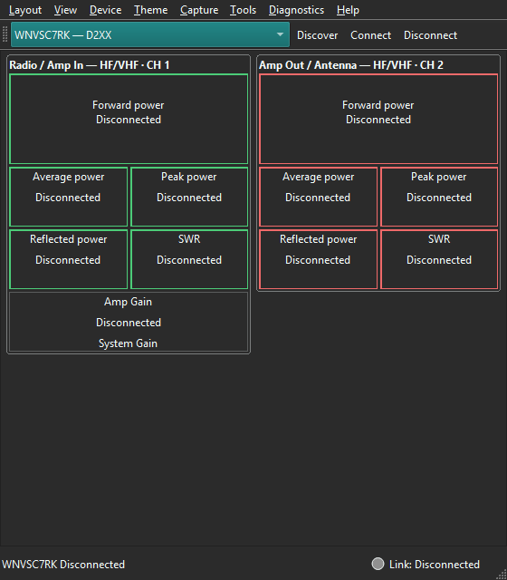

D2XX, VCP and multiple WN-2 devices
On this page
- Choose the correct WN-2
- More than one meter
- Understand the status
- If no readings appear
- Firmware and feature availability
Choose the correct WN-2
The device list identifies each WN-2 by its serial number. D2XX and VCP are two supported ways to connect by USB. VCP entries also show a port, such as COM9 on Windows. Use the connection configured during installation; do not open the same WN-2 through both methods at once. Press Discover after plugging in a device. Select its entry, then Connect. To stop that connection, select the same identity and press Disconnect.
More than one meter
Connect each WN-2 separately. Instruments retain their own Device identity and channel, so one layout can show several meters. Switching the toolbar selection does not change those assignments.
Understand the status
- Live / healthy: new readings are arriving.
- Disconnected: the selected connection is closed.
- Stale: recent readings have stopped arriving; old values are not current measurements.
- Device unavailable: the instrument's assigned identity is not available.
- Low RF: the link may be healthy, but forward power is too low for a useful SWR reading.

A disconnected source remains clearly identified without rearranging the layout. Select image to enlarge.

If no readings appear
- Nothing appears in Discover: Check meter power and try a known USB data cable connected directly to the computer. Close other WN-2 applications. For a virtual machine, attach the USB device to the guest first. Discover again.
- Only one transport appears or Connect fails: Follow the setup for your platform below. Close the existing session before switching transports. If a VCP port number changed, discover again and select the entry with the matching meter serial number.
- Connected, but a tile says Device unavailable: Check the tile's Device identity and channel. The toolbar selection does not reassign saved instruments. Low RF with a healthy link is normal while receiving.
- A working connection went stale: Try Disconnect and Connect on the same device. Use USB Recovery if needed and wait for fresh telemetry before relying on the readings. Enable optional automatic recovery in Device Settings if the meter is expected to lose power or disconnect.
- Windows: Install the WaveNode driver for USB ID 0403:B028. If D2XX works but VCP is missing, check Device Manager for USB Serial and update that entry from the same extracted WaveNode driver folder. Follow the Windows driver steps.
- Ubuntu, Linux Mint and Raspberry Pi: VCP requires the WN-2 serial driver binding and user access to the serial port. D2XX requires the matching FTDI library, USB access and release of the WN-2 interface from the serial driver. See Ubuntu and Linux Mint or Raspberry Pi for setup.
- macOS: Use the qualified D2XX setup on Apple silicon. VCP remains pending for this USB ID. See macOS.
Firmware and feature availability
Use a version confirmed from the meter or by WaveNode when reporting firmware. A diagnostic packet field is not a verified firmware version. For example, the tested meter has firmware 1.42 and reported a raw telemetry revision value of 8.
Live readings confirm the data link. Hardware protection and accessory controls can depend on the meter model, firmware and connected equipment. Use features documented for your setup. Treat an unknown protection indication as unknown and check the meter before relying on its relay state.
Some tested hardware continued sending fast USB frames after capture was stopped. Packet traffic alone does not establish that a new capture is active. Scope timing is nominal. For a support report, include the meter model, serial number, confirmed firmware if known, operating system, transport, and the status shown by the app.
Help home · RF StateSide · RayWn2App operator guide